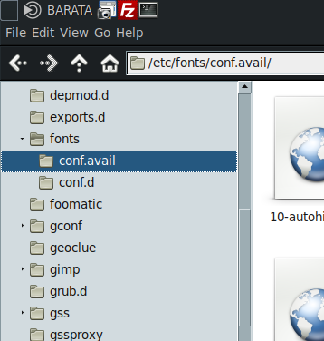

Definição de ficheiro
De um modo geral, um ficheiro é uma coleção auto-contida de dados. Não há restrição quanto ao tipo de dados dentro de um ficheiro. Ficheiros não precisam conter só texto, imagem, som, programas e muitas outras coisas podem ser colocados em um meio de armazenamento no formato de ficheiros.
Para adivinhar o tipo de dados contidos num ficheiro utilizamos o comando file
file /etc/passwd
/etc/passwd: ASCII text
Quanto ao formato, um ficheiro pode ser de texto ou binário:
- texto:
O conteúdo é compreendido pelas pessoas. Um ficheiro de texto pode ser uma bloco de texto, um script, um programa de computador escrito pelo programador, ficheiro de configuração.
- binário:
Este formato de ficheiro so pode ser entendido por computadores. Contém caracteres incompreensíveis para pessoas normais. Um ficheiro binário é gerado através de um ficheiro de texto (digitado pela pessoa que o criou, o programador) através de um processo chamado de compilação. Compilação é basicamente a conversão de um programa em linguagem humana para a linguagem de máquina.
um nome de ficheiro deve ser composto por qualquer caracter disponivel a partir do teclado. desde que o numero total de caracteres contidos no nome nao seja superior a 255. Caso seja ultrapassado o limite de 255 o sistema simplesmente ignora os caracteres extra.
Extenção no ficheiro
Cada ficheiro é identificado por um nome para facilitar a pesquisa e tambem pode ser definida uma extensao convencional que identifica o tipo de ficheiro. a extensao sao as letras apos o . no nome de um ficheiro. As extencoes sao mantidas pelos utilizadores e assumidas pelos programas que manipulam o ficheiro.
| extensao | descrisao |
|---|---|
| .txt | ficheiro de texto |
| .sh | ficheiro de script |
| .log | eventos registados de programas |
| .gz | ficheiro compactado pelo gzip |
| .html | pagina de internet |
Sistema de ficheiros/File System
Para funcionar corretamente, um sistema Linux requer vários milhares de ficheiros diferentes. Somar mais ficheiros criados e detidos pelos diversos utilizadores do sistema. O sistema de ficheiros determina o método de organizar e gerir dados em um meio de armazenamento. Um disco rígido armazena bytes que o sistema deve ser capaz de encontrar novamente de alguma forma. deve ser tão eficiente e flexível quanto possível, mesmo para ficheiros grandes.
um sistema de ficheiros e a forma que o sistema operativo usa para representar determinada informacao num espaço de armazemanto
Journaling
O sistema de journaling grava qualquer operação feita no disco, numa area especial chamada de "journal". Quando acontece algum problema durante alteracoes no disco, ele volta ao estado anterior do ficheiro.
Diferentes tipos de sistema de ficheiros
| extended filesystem | descrição |
|---|---|
| EXT | uma versao antiga do ext2 na qual nao e mais compativel com as versoes de hoje. os sistemas mais antigos tem sido convertidos para ext2. |
| EXT2 | poderoso e popular sistema de ficheiros nativo do linux. criado para ser facilmente compativel com futuras actualizacoes, sem ser necessario refazer o sistema de ficheiros ja existente. suporta até 8TB |
| EXT3 | Inclui um registo para ajudar a recuperar a partição no caso de um desligar abrupto. É o sistema de ficheiros a usar de preferencia. suporta ficheiros até 16GB e 16TB de disco. |
| EXT4 | É a versão mais recente da família de sistemas de ficheiros EXT. melhorias de velocidade. |
| SWAP | é uma particao de disco especialmente formatada. pode ser uma particao ou um ficheiro caso disponivel e usado pelo linux para paginacao de memoria para o disco. muito utilizada na opcao de hibenacao do sistema. |
| Outros FS | Descrição |
|---|---|
| ReiserFS | primeiro sistema de ficheiros com suporte a “journaling” (mantém o controle das modificações feitas no sistema de arquivos em um ficheiro de log (journal) antes de escrever no disco.) incluído no kernel Linux 2.4+ |
| XFS | é um sistema de ficheiros de 64 bits, altamente escalável e robusto. Ele é baseado inteiramente em extensão, portanto ele suporta tamanhos bem grandes de ficheiros e sistemas de ficheiros. |
| JFS | Criado pela IBM, posteriormente disponibilizaram o acesso ao seu código fonte. Usado para servidores corporativos. Sendo um sistema com estrutura inode, que armazena a localização dos blocos de cada ficheiro nas estruturas do disco. |
| btrfs | Faz parte da nova geração de sistemas de ficheiros do Linux, projectado para tirar o máximo dos novos dispositivos e métodos de armazenamento, como os discos SSD. Ao usar LVM e RAID para gerir os dados, o Btrfs está pronto para substituí-los. |
| iso9660 | sistema de ficheiros padrao do CD-ROM. a extensao rock ridge permite a utilizacao de nomes longos, sendo suportanda de forma automatica |
| NFS | sistema de ficheiros de redes que permitem compartilhar o acesso facil aos ficheiros entre os diversos computadores da rede |
| FS do Windows | descricao |
|---|---|
| VFAT | sistema de ficheiros dos sistemas Windows®9x e Windows NT®. Permitia escrever nomes de ficheiro com mais de 8 caracteres e ao mesmo tempo manter compatibilidade com o MS-DOS |
| FAT16 | suporte até discos de 2GB. sem suporte a permissoes e journaling |
| FAT32 | suporte até discos de 2TB. sem suporte a permissoes e journaling |
| msdos | compatibilidade com ms-dos, OS/2 e WinNT atraves do FAT. |
| umsdos | sistema de ficheiros tipo msdos mas com suporte a nomes longos, permissoes, ligacoes e ficheiros de dispositivos de linux |
| NTFS | Formato nativo de sistemas operativos Windows 2000®, Windows XP® e NT® |
tipos de ficheiro no linux
| Símbolo | Descrição |
|---|---|
| - | ficheiro regular |
| d | pasta |
| l | Link |
| c | Dispositivo de caractere |
| u | Dispositivo de caractere sem buffer |
| s | ficheiro Socket |
| p | FIFO, Named Pipe |
| b | Dispositivo de bloco |
FIFO - Sigla para First In, First Out, que em inglês significa primeiro a entrar, primeiro a sair. São amplamente utilizados para implementar filas de espera. Os elementos vão sendo colocados no final da fila e retirados por ordem de chegada. Pipes (|) são um exemplo de implementação de FIFO.
Buffer - É uma região de memória temporária, usada para escrita e leitura de dados. Normalmente, os buffers são utilizados quando existe uma diferença entre a taxa em que os dados são recebidos e a taxa em que eles podem ser processados.
Socket - É um meio de comunicação por software entre um computador e outro. É uma combinação de um endereço IP, um protocolo e um número de porta do protocolo.
Filesystem Hierarchy Standard
O Filesystem Hierarchy Standard, ou FHS, define as principais pastas, e o seu conteúdo, em um sistema operativo Linux ou Unix. A versão atual é a 2.3, anunciada em 29 de janeiro de 2004.
mais detalhes sobre a estrutura de um FHS:
- site pathname.com/fhs
- pdf em ingles
- site tldp sobre tema fhs em ingles
- tabela wikipedia bastante completa
Estrutura de pastas do FHS
| Estrutura basica de pastas | Descrição |
|---|---|
| /boot | kernel do sistema operativo > boot loader > lilo ou grub |
| /bin | os programas executaveis mount mkdir programas no sistema que usamos durante a execucao e inicio ls e grep programas adicionais que nao sao necessarios para boot e reparacao /usr/bin |
| /sbin | como /bin contem programas que sao necessario para o arranque e reparacao de sistema. mas aqui so o root consegue trabalhar o user pode recolher alguns dados mas nao alterar /usr/sbin mais programas |
| /lib e /lib64 | As bibliotecas de compartilhamento são pedaços de código que são usados por vários programas. A técnicar de compartilhar ficheiros economiza muitos recursos, uma vez que muitos processos reutilizam os mesmo ficheiros. |
| /mnt | pontos de montagem |
| /dev | Contém ficheiros usados para aceder aos periféricos existentes no computador. Os ficheiros de periféricos formam a interface entre a shell e as drivers de periféricos dentro do kernel. |
| /proc | Sistema de ficheiros do kernel. Esta pasta não existe no disco rígido, ela é colocado lá pelo kernel e usado por diversos programas que fazem sua leitura, verificam configurações do sistema ou modificar o funcionamento de dispositivos do sistema através da alteração em seus ficheiros. |
| /sys | Versão mais actualizada do /proc. Muitas das informações do sistema e pontos de montagem ainda estão acessíveis no /proc como um legacy. |
| /home | Pasta inicial com ficheiros dos utilizadores comuns do sistema. |
| /root | Pasta inicial do utilizador root. |
| /usr | Contém maior parte dos programas. Normalmente acessível somente como leitura. |
| /tmp | ficheiros temporários criados por programas. quando o sistema reinicia a pasta e esvaziada. |
| /var | Contém maior parte dos ficheiros que são gravados com freqüência pelos programas do sistema, e-mails, spool de impressora, cache |
| /lost+found | Cada sistema de ficheiros de Linux contém uma directoria destas. No caso de uma verificação do sistema durante o arranque (por um crash ou a pedido) encontrar ficheiros corrompidos, são colocados nesta directoria para que mais tarde se possa tentar recuperar alguns dados. |
pseudo-devices
Em sistemas do tipo UNIX, ficheiros de dispositivo especiais podem não possuir um dispositivo físico correspondente, estes são chamados de "pseudo-dispositivos".
| pseudo devices | Descrição |
|---|---|
| /dev/null | conhecido como Buraco Negro funciona como uma reciclagem retorna sempre sucesso na escrita. |
| /dev/random /dev/urandom | serve como um gerador de números pseudo-aleatórios oriundos do ruído do ambiente e obtidos através de drivers de dispositivo e de outras origens |
| /dev/zero | sobreescrever informações ou para gerar um arquivo limpo de certo tamanho |
ficheiros de configuração - /etc
| ficheiros de configuração | Descrição |
|---|---|
| /etc/fstab | contém informações de todas as partições e/ou dispositivos de armazenamento do computador que serão montados na inicialização do Sistema Operativo |
| /etc/hosts | utilizado pelo sistema operacional destinado a relacionar hostnames a endereços de ip |
| /etc/inittab | responsável por definir o nível de execução (runlevel) que o Linux vai iniciar e a sequência de scripts que serão executados para inicializar os serviços utilizado o programa init. |
| /etc/init.d/* | Os scripts executados quando o sistema entra no runlevel X estão no /etc/rcX.d, onde X pode ter valor de 0 a 6 ou o valor S. Na realidade, estas pastas apenas contém links simbólicos para os scrips localizados em /etc/init.d. |
| /etc/issue | mensagem exibida antes do utilizador efetuar login |
| /etc/motd | é utilizado para gerar mensagens automáticas para utilizadores após o login |
| /etc/mtab | Lista os sistemas de ficheiros montados atualmente no sistema. Sua função é idêntica ao /proc/mounts |
| /etc/passwd | contém as informações sobre cada um dos usuários que pode entrar no sistema. Hoje em dia, em muitos sistemas operacionais este arquivo é apenas um dos muitos back-ends para um serviço de nomes e senhas mais geral. |
| /etc/shadow | ficheiro armazena as senhas criptografadas caso estiver usando o recurso de senhas ocultas. Este arquivo somente pode ser lido pelo usuário root. |
| /etc/printcap | base de dados para configuracao da impressora |
| /etc/services | base de dados para configuracao de nomes de serviços e portas |
| /etc/timezone | indica a localização para cálculo correto do seu fuso-horário local. Europe/Lisbon |
| /etc/syslog.conf | Contém configurações para definir o que será registrado nos arquivos de log em /var/log syslogd klog |
| /etc/shells | contem uma lista de interpretadores de comando (shells) válidos no sistema. |
caminho absoluto e relativo
- caminho absoluto

Começa com uma 'barra' (shift+tecla 7), por exemplo: /tmp/ficheiro, /home/teste/ficheiro2, essa 'barra' faz referencia a raiz (/), a partir da qual, todos caminhos absolutos derivam, formando uma árvore de pastas. A vantagem dos caminhos absolutos é poder indicar ficheiros - executáveis ou não.
# exemplo de um caminho absoluto
/boot/grub/grub.cfg
- caminho relativo
Não contém uma 'barra' no início. A referência é geralmente o pasta atual (pwd) do processo sendo executado. Por exemplo, se a pasta atual for a raiz (/), pode simplesmente executar: ls tmp em vez de ls /tmp. A vantagem dos caminhos relativos é poder executar comandos mais curtos.
| caminhos relativos | significado do caracter |
|---|---|
| . | significa a pasta atual |
| .. | significa a pasta parente(nivel a cima da pasta atual). |
| ~ | til, significa a pasta inicial onde estao os ficheiros do utilizador |
# exemplo de caminho relativo
~/Downloads
./script.sh
ficheiro /etc/fstab
/etc/fstab permite que as particoes do sistema sejam montadas automaticamente durante o arranque do sistema.
contem configuracoes sobre as particoes que sao lidos pelo comando mount
cada linha desde ficheiro contem a partiçao que indicamos montar. o ponto de montagem
| particao que deseja montar | ponto de montagem | tipo | opcoes | dump | ordem |
|---|---|---|---|---|---|
| /dev/sda1 | /boot | ext2 | defaults | 0 | 1 |
| /dev/sda2 | / | ext4 | defaults | 0 | 2 |
| opcoes | descricao |
|---|---|
| defaults | padrao |
| noauto | nao monta os sistema de ficheiros durante o arranque |
| ro | monta somente leitura readonly |
| user | permite que user montem o sistema de ficheiros |
| sync | util para gravar imediatamente os dados |
| dump | frequencia de backup feita, 0 desactivado |
| ordem | ordem dos sistema de ficheiros que sao verificados durante o arranque |
mount/umount
para desmontar um sistema de ficheiros escreve o comando umount para desmontar um sistema de ficheiros que foi montado com o mount. deve ter permissao de root para desmontar uma particao
sintaxe: umount [dispositivo/ponto_de_montagem]
montar ficheiro de imagem ISO
sintaxe: mount [ficheiro.iso] -t iso9660 -o loop [destino]
listar ficheiros
- para listar ficheiros ocultos utiliza a opcao
-a. - para listar os atributos e permissoes dos ficheiros usa a opcao
-lde lista longa.
| Tipo e as permissões do arquivo | Numero de hardlinks | Proprietario e grupo | Tamanho em bytes | Data e hora de modificação | Nome do ficheiro |
|---|---|---|---|---|---|
| drwxr-xr-x | 2 | root root | 4096 | Dez 30 2004 | bin |